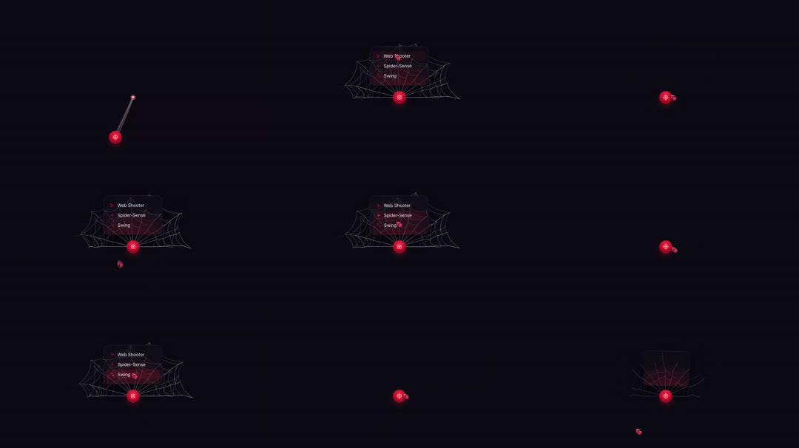

Spider-Man web dropdown: on a near-black scene, a glowing red node (crosshair dot) fires a web strand upward, then fans a full spiderweb SVG out from the node with a radial dropdown menu (Web Shooter / Spider-Sense / Swing) hanging off the web; closing retracts the web back into the node.

Build a spider-web dropdown. Scene: #08080C. Node: 18px red (#E11D48) glowing dot with crosshair ticks, idle pulse (box-shadow 0 0 12px red, 2s sine). On trigger: first a single strand (1px line, white/30) animates from the node to an anchor point 120px away (stroke-dashoffset, 200ms), then the web deploys from the node: 5 radial strands (spokes at -70..+70deg) and 3 concentric sagging polygon rings (quadratic curves dipping between spokes), all 1px white/25 strokes, drawn outward with staggered dashoffset animations (spokes first, then rings inner->outer, 500ms total) plus a red radial glow blooming at the hub. Menu: 160px dark glass card (black/60, blur, 1px red/20 border) hanging from the top strand - rows 'Web Shooter / Spider-Sense / Swing', 13px, each prefixed by a red caret, staggered fade+slide 8px; hover row = red/10 fill + full-red text. Close: menu fades (150ms), web retracts by reversing dashes hub-ward (350ms), strand releases, node settles.